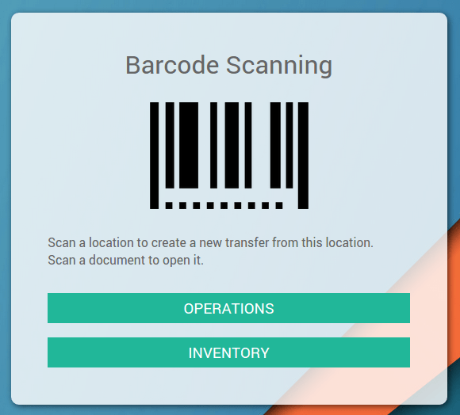
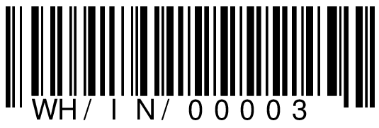

有两种处理收货的方法：可以在打印出来的文档上(在文档上扫描项目行)或者在屏幕上(直接扫描产品)
处理打印出来的收货单：
从当天**代收**列表中选择单据并打印入库单，并且从上面菜单打印**拣货操作**
一旦开始处理收货单，扫描收货单右上角的条码从而让该收货单的详细内容在屏幕上显示出来。
然后，扫描每个产品的条码，或者如果产品的条码不容易够到，看不清楚或者丢了的情况下，可以在调拨单的项目行上扫描条码
一旦你扫描了所有的产品，扫描 确认 条码动作来完成操作
在电脑或者移动设备处理收货单
下载所有标记为**待收**的收货单，并且打开第一个。
拣货并扫描列出的产品
当所有的拣货都完成的时候，点击**确认**按钮或者扫描**确认**条码动作来完成操作。
移到下一个收货通过点击右上角的**箭头**或者扫描**下一页**条码动作
例子
打开操作界面。
扫描.
拣货呈现，逐个扫描或者用鼠标和键盘填写所有的信息。